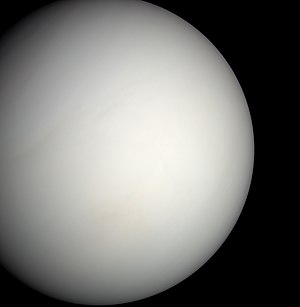

ناهید یا زهره[۱۴] به ترتیب نزدیکی به خورشید، دومین سیارهٔ زمینسان سامانهٔ خورشیدی است که در هر ۲۲۵ روز یکبار به دور خورشید میچرخد. مدار زهره، میان مدارهای زمین و تیر قرار گرفته و از نظر مداری، نزدیکترین فاصله را با مدار زمین دارد.[۱۵] ناهید پس از ماه، درخشانترین جرم آسمانی طبیعی است که به هنگام شب در آسمان زمین دیده میشود و قدر ظاهری آن به ۴٫۶- میرسد.[۱۲] در زبان لاتین به این سیاره وُنوس میگویند که به معنی خدای عشق و زیبایی در روم باستان است.
سیارهٔ ناهید (زهره)، بدون قمر است و در مدار تقریباً دایرهواری بهدور خورشید میگردد. این سیاره از بسیاری دیدگاهها ازجمله اندازه، جرم، گرانش و ترکیبات ساختاری به زمین همانندی دارد و به خاطر همین نزدیکیها آن را سیارهٔ «خواهر زمین» نیز خواندهاند. زهره از نظر حجم و جرم، هفتمین جسم بزرگ در سامانه خورشیدی است.
ناهید گرمترین سیاره در سامانه خورشیدی است. این سیاره دارای هواکره است. هواکرهای ضخیم و غلیظ که موجب میشود که دیدن سطح آن با چشم غیرمسلح دشوار باشد. بیشتر هواکرهٔ آن را کربن دیاکسید تشکیل داده و در ابرهای بالایی آن قطرههای ریز سولفوریک اسید وجود دارند. وجود کربن دیاکسید در هواکرهٔ این سیاره که گرما را در سیاره نگه میدارد دمای آن را به مقدار بسیار چشمگیری (۴۸۱ درجهٔ سلسیوس نزدیک سطح سیاره) افزایش دادهاست. وجود اکسیژن بین دو لایه جو ناهید تأیید شده است. البته این اکسیژن از نوع تک اتمی می باشد که با اکسیژن دو اتمی که در زمین وجود دارد، متفاوت می باشد